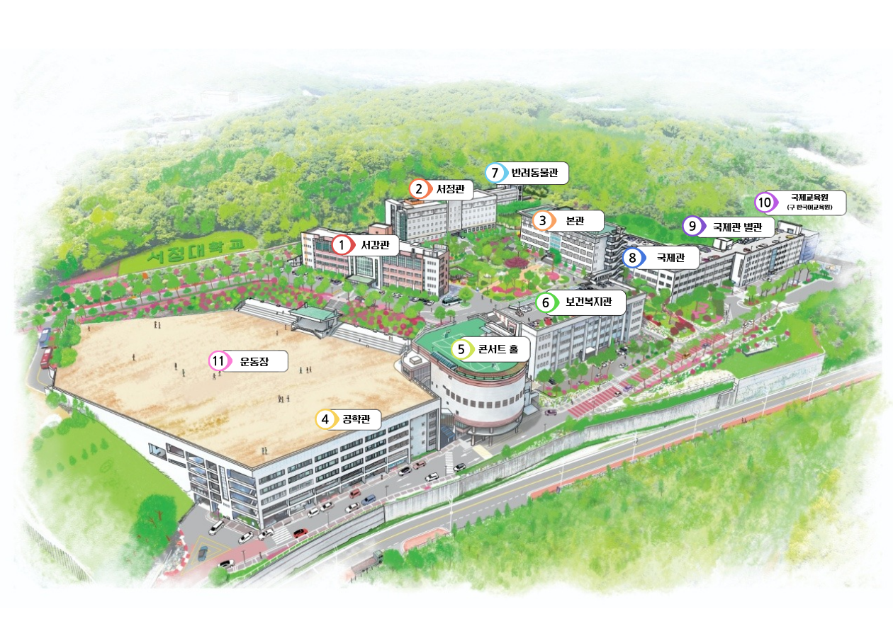

2025학년도 의견수렴 결과
91
총 수렴 건수
70
반영 완료
반영률 76.9%
13
검토 중
예산/절차 협의
8
보류
현실적 제약
📊 수렴 방법별 현황
총장님과의 간담회
68%
학생성공처장과의 간담회
80%
총학생회 간담회
100%
대학에 바란다 플랫폼
73%
✅ 카테고리별 주요 반영 성과
교육·복지시설 개선
다수 반영
셔틀버스 운영 개선
반영 완료
비교과 프로그램 확대
반영 완료
기숙사 환경 개선
반영 완료
흙 운동장 트랙 변경
보류
💡 2025학년도 주요 반영 사례
🍽️ 총장님과의 간담회 반영 결과 (25건 수렴 · 17건 반영)
반영 17
검토 3
보류 5
▼
학생식당 메뉴 다양화
겨울방학 중 환경 개선 후 뷔페식과 간단식 병행 운영. 특정 날짜에 각국 대표 음식 제공. 관련 부서와 지속 협의 예정.
반영
셔틀버스 노선 확대 및 시간대 조정
버스 이용자 현황 파악 후 덕정역↔학교 시간표 조정 완료. 별내, 대곡, 화정, 연신내 정류장 위치 및 탑승 시간 조정. 민락·별내 하교 시 덕정역 경유 중단·별내 직행 결정.
반영
포천 노선 셔틀버스 좌석 수리 (2인승 고장)
담당 기사와 소통하여 좌석 수리 완료 (25.12.3.)
반영
불친절한 셔틀버스 기사 CS교육 실시
매달 1회 셔틀버스 기사 대상 서비스 교육 시행 중. 개선되지 않을 경우 인력 조정 검토 예정.
반영
휴게 공간 및 자습 공간 부족
보건복지관 카페테리아→연회장 확대, 서정관 열람실·서강관 1층 라이프 라운지·옥상·로비 등 공간 마련. 겨울방학 중 도서관 리모델링 예정. 양주테크노밸리 캠퍼스 구축 계획 중.
반영
기숙사 환경 개선 및 기자재 구매
건조기 5대, 세탁기 2대, 제습기 6대, 무인택배함 3개 설치. 기숙사 현장점검 지속 시행.
반영
서정관 앞 돌계단 교체
동결·장마 시 안전사고 방지용 진입 금지 푯말 부착 중. 관련 예산 논의 후 편성 여부 검토 중.
검토
공학관 화장실 환경 개선 공사
화장실 환경개선은 순차 진행 중. 공학관 화장실 검토 및 예산 수립 계획 중.
검토
학생식당 할랄 음식 추가
특정 날짜에 각국 대표 음식 제공 시작. 영양사와 협의하여 무슬림 학생도 이용 가능하도록 메뉴 다양화 예정. 푸드트럭 적극 홍보 예정.
검토
그린식품가공과 실습실 근처 정수기 설치
간담회 의견 수렴 후 공학관 2층~5층 복도 내 정수기 설치 완료.
반영
국제관 별관 307호 전자칠판 오류
현장 점검 결과 전자칠판 문제가 아닌 HDMI 연결선 문제로 확인. HDMI 선 교체 완료.
반영
야간 셔틀버스 추가 배치 요청(20시)
이용률 및 타당성 검토 결과 실질적 이용자 수가 적을 것으로 판단되어 추진하지 않기로 결정.
보류
반려동물관 근처 흡연부스 설치
지리적 위치·설치 조건 미충족으로 해당 건물 근처 설치 불가. 담배꽁초 모래 쓰레기통을 뒤편에 재배치. 예산·설치 장소·공사 일정 등 제약으로 즉각 반영 어려움.
보류
흙 운동장을 트랙 운동장 형태로 변경
현재 운동장은 각종 행사 및 주차공간으로 사용 중. 트랙 형태로 변경하여 사용하기에 어려움.
보류
서정피트니스센터 운동기구 확대 및 전신거울 설치
운동기구 간 적정 간격 유지 필요로 추가 기구 설치 시 안전 문제 발생 우려. 러닝머신 앞 거울 설치 시 중심 상실 위험으로 미설치.
보류
소방시설 점검 강화
소방시설 자체점검 연 2회 시행 (상반기: 25.6.27.~7.2., 하반기: 25.12.29.~31.). 오작동 발생 시 즉각 조치 중.
반영
본교 석사 과정 확대
미래자동차과정, AI기반사회복지과정 2026학년도부터 운영 예정. 학습 수요에 맞는 추가 과정 확대 예정.
반영
국제학생 대상 한국어 수업 확대
2025학년도 2학기 교육과정 개발 시 반영. 사회통합프로그램, TOPIK 등 한국어 능력 관련 교과목 반영.
반영
대동체전·용암제 연예인 섭외 및 체험 부스 확대
총학생회 주관 연예인 수요조사 진행 및 학생 요구 반영 섭외 (그레이, 퀸와사비, 비니쌤, 다이나믹듀오, 곽지은). 2025 용암제 외부기관 체험 부스 운영 완료.
반영
교내 해충 방역 확대
러브버그 발생에 따른 해충방제 실시. 매달 정기적인 해충 방역 시행.
반영
학과 사무실 직원 CS 교육
상반기: 긍정적 팔로워십·커뮤니케이션, 데이터 관리 및 CS 역량 교육 진행. 하반기: 학과 업무와 운영 사례, AI협업 대학 행정 교육 진행.
반영
서강관 내 비둘기 출입 방지
방충망 미설치 또는 찢어짐 등 문제 창문 확인 및 조치 완료.
반영
국제학생 에티켓 교육
카드뉴스·전단지 제작 및 에티켓 영상 제작 후 사이니지 모니터 반복 재생. 총학생회 새치기 예방 캠페인 진행 (25.5.12.~5.30.).
반영
서정관 내 전자레인지 추가 설치
성인학습지원센터에서 커피포트·전자레인지 구매 후 서정관·공학관·서강관 등 학과에 배치 완료.
반영
밤·새벽 교내 가로등 점등
심야 시간 가로등 점등에 어려움이 있어 보류.
보류
🏢 학생성공처장과의 간담회 반영 결과 (46건 수렴 · 37건 반영)
반영 37
검토 5
보류 4
▼
서강관 1층 라이프 라운지 냉난방 수리
라이프 라운지 내 냉난방기 A/S 완료 (25.3.21.)
반영
학생식당 혼잡 개선
토요일 인원 몰림 현상 안전사고 방지를 위해 질서 지도 인력 배치 및 가드라인 설치.
반영
주차 공간 확보
2024학년도 '서정대학교 세부조정 계획 및 실시계획 변경인가 용역 계약' 체결. 2025학년도 양주시 건축 허가 후 주차 타워 건설 계획 중.
반영
엘리베이터 내 건물 층별 안내판 부착
엘리베이터 외벽에 건물 층별 부서·편의시설 등 안내판 부착 완료. 최신화 지속 시행 예정.
반영
사물함 추가 및 위치 이동
학과별 사물함 현황 조사 완료 (~25.03.18.). 학과 간 사물함 개수 조정 및 위치 이동 완료 (25.4.19. / 25.5.13.)
반영
강의실 에어컨 청소
정기적으로 건물 내 에어컨 필터 청소 진행 중. 필요 시 통합 민원 접수함을 통해 관련 부서에 협조 요청 가능.
반영
장애 학우 불편 교내 시설 개선
2025학년도 중 콘서트홀 제1세미나실 내 장애인 리프트 설치 예정.
반영
학생식당 메뉴 공지 개선
학생공지사항 > 식단표 게시판에 뷔페식 메뉴 외 간편식 메뉴도 함께 공지될 수 있도록 개선 완료.
반영
학생식당 키오스크 추가 설치
서정관 1층 학생식당 키오스크 1대 추가 설치.
반영
서정관 엘리베이터 바닥 공사
서정관 승강기 내부 바닥재 파손으로 인한 교체 공사 완료 (25.12.7.~8.)
반영
공학관 여자 화장실 잠금장치 수리
간담회 이후 시설팀에서 수리 진행 완료 (25.10.)
반영
서강관 3층 정수기 수리
점검 결과 이상 없음 확인 완료.
반영
동아리 홍보 확대
동아리 박람회 진행 (25.3.14.~15.). 1년간 동아리 활동 성과 공유 및 네트워킹 동아리 포럼 진행 (25.11.28.)
반영
비교과 프로그램 홍보 확대
SJ-CORE, 건물별 사이니지 모니터 설치(엘리베이터, 본관 3층 등)를 통해 비교과 프로그램 홍보 영상 재생 중.
반영
해외 연수 기회 확대
글로벌 대학 탐방, 전문대학 글로벌 현장실습, 글로벌 휴먼캠프 등 해외 교류 프로그램 운영 중.
반영
축제 및 체육대회 일정 조절 (중간고사 겹침)
대동체전: 2025.5.16.~17.(1학기 11주차). 용암제: 2025.10.31.~11.1.(2학기 9주차). 시험 기간과 겹치지 않게 조율 완료.
반영
취업 컨설팅 지원
전문 컨설턴트와 함께하는 1:1 취업컨설팅 프로그램 지속 운영 중. SJ-CORE 시스템을 통해 상담 예약 가능.
반영
와이파이 개선
현장실사 결과 일부 장소에서 적정 사용자 수 초과로 속도 지연 확인. 기기 추가 설치 및 재배치를 업체와 논의 중. 2025학년도 중 보완 작업 완료 예정.
반영
주말 부서 직원 배치 및 운영
원격교육지원센터·장학부서·헬프데스크 토요 근무 진행. 건강증진센터·성인학습지원센터·평생교육원 학기 중 매주 토요일 근무.
반영
중요 사항 빠른 공지
2025학년도부터 헤이영 캠퍼스 앱 Push 알람 기능을 활용하여 중요 공지 신속 안내 (스쿨버스 고장·지연, 총학생회 투표 등).
반영
천원의 아침밥 메뉴 다양화
2025학년도부터 협업 기관을 학생식당에서 GS25로 변경. 만족도 조사를 기반으로 GS25와 협업하여 메뉴 다양화 지속 노력 중.
반영
컴포즈커피 키오스크 추가 설치
키오스크 추가 설치 시 인력 운영 규모 변동 없어 커피 제공 소요 시간 단축 효과 없을 것으로 판단하여 미진행.
보류
보건복지관 5층 연회장 환풍기 설치
연회장 구조상 환풍기 설치 어려움. 주기적으로 환기 실시 예정.
보류
아동동작실 공기청정기 설치
공기청정기 구매 불가. 강의실 에어컨 송풍 기능을 활용하여 환기 진행 예정.
보류
공학관 4층 강의실 에어컨 미작동
공학관 건물 전체 현장점검 후 개선 예정.
검토
화장실 내 손소독제·핸드 드라이어·핸드타월 설치
예산 검토 후 2026학년도 순차 진행 예정.
검토
🎓 총학생회 간담회 반영 결과 (5건 수렴 · 5건 반영)
반영 5
▼
총학생회실 환경 개선
총학생회실 파티션 설치 완료. 컴퓨터 교체 완료.
반영
대동체전 체육대회 종목 확대
2025학년도 대동체전 만족도 조사 및 학생 의견 수렴 결과 반영. 2026학년도 체육대회 종목 확대 운영 예정.
반영
주요 행사 우천 시 대응방안 강화
사전 준비 / 행사 당일 / 사후 조치 3단계 우천 대응 체계 확립. 양주소방서·은현면 파출소 등 지역 기관 협조 요청.
반영
주요 행사 학과 테이블 개수 확대
2025학년도 용암제부터 학과 천막 및 테이블 개수 확대 완료. 2026학년도 대동체전 및 용암제도 동일 수준 준비 예정.
반영
총학생회 선거 방식 개선
기존 종이 투표의 장소 제약 극복. 헤이영 캠퍼스 앱을 통한 총학생회 선거 진행 (25.11.14.~15.)
반영
💬 대학에 바란다 플랫폼 반영 결과 (15건 수렴 · 11건 반영)
반영 11
검토 2
보류 2
▼
기숙사 관리 직원 CS 교육
기숙사 입사일 직원 부적절한 응대에 대해 경고 및 재발 방지 조치 완료. 관리자 CS교육 강화 예정.
반영
학생식당 위생 문제
메뉴 검식 시 별도 전용 도구 사용 및 위생 수칙 준수. 오해 소지 방지를 위한 주의 요청 전달 완료.
반영
기숙사 에어컨 가동
에어컨 미가동 민원 접수 후 냉방 가동 재개 결정 (25.4.28.). 중앙 제어 온도 조절 완료 (25.9.17.)
반영
셔틀버스 새치기 개선
에티켓 영상 제작 및 사이니지 모니터 반복 재생. 총학생회 91번 버스 정류장·덕정역 새치기 예방 캠페인 진행 (25.5.12.~30.)
반영
SJ-CORE 모바일 로그인 오류
로그인 시스템 변경 과정에서 모바일 환경 연결 오류 확인. 수정 조치 완료 (2025.07.)
반영
기숙사 통금 시간 이전 폐쇄 개선
사실 확인 후 기존 안내 시간에 맞춰 문을 개폐하도록 요청 완료 (25.11.10.)
반영
국제관 별관 418호 동아리실 도어락 설치
학생 의견 반영하여 학교 내부 논의 후 도어락 설치 완료.
반영
서정관 이중주차 차량 통제 강화
교내 보안관 주기적 순찰 진행. 시설팀과 협의하여 해당 구역에 주차금지 안내판 설치 완료.
반영
주말 주차 인력 추가 배치
주말 주차 관리 인력 배치하여 교통 지도 진행. 서정관 주차 질서 개선을 위해 도로 도색과 안내 입간판 보강 계획 수립 중.
반영
주요 학사일정 조속한 공지
기존 2월·8월에 안내하던 것을 1월·7월 중으로 안내 시기 조정 예정.
반영
LMS 지각 인정 기간 폐지 동의 배너 해제
학기 초 약 6주간 한시적 운영 후 LMS 공지사항으로 안내 전환. 로그인 시 반복 노출 해제 완료.
반영
반려동물관 내 CCTV 설치
2026학년도부터 교내 주요 건물 대상 CCTV 증설 단계적 추진 예정. 반려동물관 복도 및 주요 이동 동선에 대한 설치·보완 방안 검토 예정.
검토
학사복 디자인 변경
디자인 변경 의견 접수 및 시안 확인 완료. 부서 간 협의와 절차 필요로 즉시 반영 어려움. 추후 논의 시 학생 의견 반영 검토 예정.
검토
스쿨버스 유연한 출발 시간 조정
스쿨버스는 정해진 시간표에 따른 운행이 원칙. 버스 내 수용 가능 인원을 채워도 일관된 출발시간 유지.
보류
가족장학금 제도 제한 해지
장학위원회에서 타 장학금 형평성 및 한국장학재단 이중지원 방지 제도를 고려하여 결정된 내용. 현 기준 유지 예정.
보류
2024학년도 의견수렴 결과
62
총 수렴 건수
51
반영 완료
반영률 82.3%
7
검토 중
4
미반영/완료 처리
💡 2024학년도 주요 반영 사례
🍽️ 총장 간담회 반영 결과
반영 6
검토 2
▼
서정관 앞 돌계단 안전조치
동결 및 장마 시 안전사고 방지를 위해 진입 금지 푯말 제작하여 부착 완료.
반영
학생식당 메뉴 및 환경 개선
겨울방학 중 환경 개선 시행 및 메뉴 개선 완료.
반영
주차 공간 부족
공간 확보를 위해 '서정대학교 세부조성 계획 및 실시계획 변경인가 용역 계약' 체결 후 절차 진행 중.
검토
심화 과정에 한국어교육자격증 과정 신설
글로벌한국어복지학과 전공 과정 이수 시 한국어교원자격증(2급) 발급 가능.
반영
실습실 환풍기 에어컨 청소
전 건물 에어컨 청소 및 환풍기 청소 실시 완료.
반영
지게차·굴삭기 실습 공간 확보
실습 공간 관련 공간조정위원회와 협의 중.
검토
학생 의견수렴 기회 확대
학생성공처장 간담회 및 총장 간담회 지속적 운영 및 결과 피드백 실시.
반영
학교 행사 및 프로그램 다국어 안내문
국제학생 대상 프로그램 홍보 시 다국어로 된 홍보물 제작 및 배포.
반영
🏢 처장 간담회 주요 반영 결과
반영 29
검토 5
▼
셔틀버스 증차 및 시간대 확대
주말 셔틀버스 노선 확대 (부천/송정, 전곡/지행). 2학기부터 양주역 폐지·덕정역 추가 운영. 지속적인 노선별 이용률 조사를 통한 개선 확대.
반영
91번 버스 증차
점심시간대 기존 2대에서 3대로 증차 (7월~8월). 11월부터 노선 연장 (덕정 주공6단→양주 옥정).
반영
천원의 아침밥 식수 확대
주 6일 배식. 토요일 식수 300개에서 400개로 확대. 만족도 조사 기반 차년도 GS25와 협업 예정.
반영
화장실 환경 개선
본관, 반려동물관 화장실 환경 개선 공사 완료. 순차적으로 건물별 화장실 환경 개선 진행 예정.
반영
공학관 여자샤워실 개방
공학관 여자샤워실 개방 완료.
반영
편의시설 및 휴게실 확대
보건복지관 카페테리아~연회장 확대 운영. 서강관 1층 잡카페 리모델링 완료 (2024.10.). 서강관 로비 리모델링 2024학년도 겨울방학 중 완료 예정.
반영
콘서트홀 5층 여자화장실 온수 공급
개선 공사 실시, 온수 공급 완료.
반영
잡카페 공사 완료
9월 가 오픈, 10월 1일 공사 완료 후 학생들에게 완전 개방.
반영
사물함 교체
2월 학과별 수요조사를 통해 사물함 교체 완료. 2학기 사회복지상담과 사물함 교체 완료 (건물 누수에 따른 손상 개선).
반영
전자칠판 매뉴얼 강의실 배치
전자칠판 기본 사용 영상 QR코드 강의실 내 비치 완료.
반영
강의실 및 실습실 환경 개선
신규 구축: 공학관 용접실습실 등 3건. 리모델링: 본관 동양조리실습실, 서강관 호텔객실실습실. 여름 방학 유지보수 완료.
반영
교내 와이파이 개선
2024학년도 겨울방학 중 개선 공사 완료 예정.
반영
이슬람 학생 식당 메뉴 개선
2024학년도 겨울방학 중 식당 환경 개선 및 뷔페식 식단 운영 예정. 문화 차이에 따른 메뉴 불만 완화 기대.
반영
💬 대학에 바란다 / 교육수요자 만족도 주요 반영 결과
반영 12
▼
91번 버스정류장 차단봉 부분 해체
장애 학생 버스 승차 시 불편하지 않도록 차단봉 일부 제거 완료.
반영
스쿨버스 공지 학생 전체 문자 발송
학교 공식 SNS 및 홈페이지 공지. 카카오톡 채널 개설을 통해 다수의 학생이 공지 받을 수 있도록 개선.
반영
보건복지관 1층 누수 및 사물함 훼손 조치
다양한 방안 모색 중. 관련 부서와 협의 및 사물함 건조 작업 완료.
반영
국제학생 대중교통 예절 교육
카드뉴스·전단지 배부, 스쿨버스 내 홍보물 부착, 에티켓 영상 제작 후 추가 캠페인 진행 완료.
반영
카피킬러 프로그램 도입
도서관 홈페이지를 통해 카피킬러 프로그램 이용 가능.
반영
동아리·소모임 학생활동 지원
동아리 운영 계획안 심의를 통해 지원. 동아리 박람회·포럼 등 동아리 관련 행사를 통해 활성화 노력.
반영
신체 건강을 위한 보건·의료 서비스 제공
관련 부서에서 학생 건강을 위한 프로그램 및 캠페인 진행 중. 홍보 확대를 통해 많은 학생이 참여할 수 있도록 개선 예정.
반영
구분별 의견수렴 결과
2025 25건
수렴 건수
반영률 68.0% (17건)
2024 8건
수렴 건수
6건 반영
2025학년도 총장님과의 간담회 — 주요 반영 사례 요약
▼
학생식당 메뉴 다양화 (뷔페식+간단식, 각국 음식)
2025.03.~ · 학생성공처, 행정처
반영
셔틀버스 노선·시간대 조정 (덕정역, 별내 직행 등)
상시 · 학생성공처
반영
포천 노선 셔틀버스 좌석 수리
2025.12. · 학생성공처, 행정처
반영
셔틀버스 기사 CS교육 (매월 1회)
상시 · 학생성공처
반영
휴게·자습 공간 확대 (열람실, 라운지, 옥상 등)
2025.12. · 학생성공처, 행정처, 기획조정실
반영
기숙사 기자재 구매 (건조기·세탁기·제습기·무인택배함)
상시 · 기숙사, 행정처
반영
정수기 설치 (공학관 2~5층 복도)
2025.07. · 행정처
반영
석사 과정 확대 (미래자동차, AI기반사회복지)
2026.03.~ · 교육혁신처
반영
국제학생 한국어 수업 확대 (TOPIK, 사회통합프로그램)
2025.08. · 교육혁신처
반영
용암제 연예인 섭외 및 체험 부스 확대
2025.05. / 2025.11. · 학생성공처
반영
교내 가로등 심야 점등
심야 가로등 점등 어려움으로 보류
보류
반려동물관 근처 흡연부스 설치
지리적 위치·설치 조건 미충족으로 보류. 담배꽁초 쓰레기통 재배치 완료.
보류
흙 운동장 트랙 운동장 변경
행사·주차공간으로 사용 중이어서 변경 어려움으로 보류
보류
서정피트니스센터 운동기구 확대·전신거울 설치
공간 안전 문제로 보류
보류
2025 46건
수렴 건수
반영률 80.4% (37건)
2024 36건
수렴 건수
다수 반영 완료
2025학년도 학생성공처장과의 간담회 — 주요 반영 사례 요약
▼
서강관 1층 라이프 라운지 냉난방 수리 완료
2025.03.21. · 행정처
반영
학생식당 혼잡 개선 (질서 지도 인력 배치, 가드라인)
2025.04. · 학생성공처, 행정처
반영
주차 타워 건설 계획 (양주시 건축 허가 후)
진행 중 · 행정처
반영
엘리베이터 층별 안내판 부착 완료
상시 · 행정처
반영
사물함 현황 조사 및 개수 조정·위치 이동 완료
2025.04.~05. · 학생성공처
반영
서정관 엘리베이터 바닥재 교체 완료
2025.12.7.~8. · 행정처
반영
공학관 여자 화장실 잠금장치 수리 완료
2025.10. · 행정처
반영
학생식당 키오스크 추가 설치
2026.03. · 행정처
반영
학생식당 간편식 메뉴도 공지 가능하도록 개선
상시 · 학생식당
반영
콘서트홀 장애인 리프트 설치 예정
2026.01. · 장애학생지원센터
반영
비교과 프로그램 홍보 확대 (사이니지, SJ-CORE)
상시 · 학생성공처
반영
축제·체육대회 일정 시험 기간과 겹치지 않게 조율
2025.05. / 2025.10. · 학생성공처
반영
와이파이 개선 공사 (기기 추가 설치 및 재배치)
상시 · 기획조정실, 정보전산센터
반영
컴포즈커피 키오스크 추가 설치
인력 규모 변동 없어 시간 단축 효과 없음으로 보류
보류
2025 5건
수렴 건수
반영률 100% (5건)
2024 6건
수렴 건수
6건 반영 완료
총학생회 간담회 반영 결과 (2024~2025)
▼
[2025] 총학생회실 파티션 설치 및 컴퓨터 교체
상시 · 학생성공처, 정보전산센터
반영
[2025] 대동체전 체육대회 종목 확대 예정
2026.05. 예정 · 학생성공처
반영
[2025] 주요 행사 우천 시 3단계 대응 체계 확립
2025.11. · 학생성공처
반영
[2025] 용암제부터 학과 천막·테이블 확대
2025.11. · 학생성공처
반영
[2025] 총학생회 선거 헤이영 캠퍼스 앱으로 진행
2025.11. · 학생성공처
반영
[2024] 총학생회 1학기 운영 결과 피드백 및 2학기 계획 논의
2024.05. · 학생성공처
반영
[2024] 용암제 연예인 섭외 시 학생 의견 반영 (루시, 행주, 비니쌤, 박군)
2024.10. · 학생성공처
반영
[2024] 교외 환경보호 캠페인 (플로깅)
2024.08. · 학생성공처
반영
[2024] 교내 캠페인 거점 마련 (농구장 천막 설치)
2024.10. · 학생성공처
반영
[2024] 베트남 반랑대학교 업무협약 및 총학생회 교류
2024.12. · 학생성공처, 국제교류처
반영
2025 15건
수렴 건수
반영률 73.3% (11건)
2024 8건
수렴 건수
7건 반영 완료
'대학에 바란다' 플랫폼 반영 결과 (2024~2025)
▼
[2025] 기숙사 관리 직원 CS교육 강화
2025.03. · 기숙사
반영
[2025] 기숙사 에어컨 가동 (민원 접수 후 즉시 조치)
2025.04. / 2025.09. · 기숙사
반영
[2025] SJ-CORE 모바일 로그인 오류 수정
2025.07. · 기획조정실
반영
[2025] 기숙사 통금 시간 이전 폐쇄 개선
2025.11. · 기숙사, 행정처
반영
[2025] 국제관 별관 418호 동아리실 도어락 설치
2026.02. · 학생성공처, 행정처
반영
[2025] LMS 배너 반복 노출 해제
2025.09.~10. · 원격교육지원센터
반영
[2024] 91번 버스정류장 차단봉 부분 해체 (장애학생 편의)
2024.06. · 행정처
반영
[2024] 기숙사 샤워부스 유리문 파손 철거
2024.06. · 건강증진센터, 기숙사, 행정처
반영
[2024] 카카오톡 채널 개설로 스쿨버스 공지 개선
상시 · 학생통합서비스센터
반영
[2024] 카피킬러 프로그램 도입
상시 · 도서관
반영
교육수요자 만족도 조사 반영 결과 (2025학년도)
재학생 (714명) 만족도 반영 결과
▼
교육_교과 외: 학생 자치활동 실질적 지원 강화
주요 행사 학생 의견 수렴 반영 (연예인 수요조사, 일정 조율, 체육대회 종목 확대 등)
반영
교육시설: 시설 수리 및 확대
도서관 리모델링, 실습실·강의실 환경개선, 기숙사 물품 구매, 엘리베이터 바닥 공사, 화장실 잠금장치 수리, 주차타워 설립 계획 등
반영
학생지원서비스: 비교과 프로그램 및 의견수렴 창구 강화
학과 수요조사 결과 반영 비교과 프로그램 운영. 다양한 의견수렴 창구 (총장·처장 간담회, 대학에 바란다, 만족도 조사 등) 통한 지속적 학생 니즈 파악.
반영
기타: SJ-CORE 원스톱 학생지원체계 구축
학생성공지원시스템(SJ-CORE) 구축, 성인학습자 주말 근무 확대
반영
국제학생 (732명) 만족도 반영 결과
▼
입학서비스: 국제학생 신입생 오리엔테이션 진행
비자 변경, 외국인등록증 발급 절차 등 국내 정주 필수 정보 안내.
반영
교육_교과 외: 동아리 지원 확대
캡스톤디자인 연계 동아리 지원, 동아리 포럼 등 다양한 동아리 지원 프로그램 운영.
반영
학생지원서비스: 취업 연계 외부 사업 유치
글로벌 인재 취업 선도대학, 외국인 요양보호사 양성대학, 뿌리산업 외국인 기술인력 양성대학 선정.
반영
캠퍼스 위치별 반영 사례
✅ 건물 핀을 클릭하면 반영 완료된 사례를 확인할 수 있습니다 (2024~2025학년도)

1
서강관
2
서정관
3
본관
4
공학관
5
콘서트홀
6
보건복지관
7
반려동물관
8
국제관
📍 클릭 가능한 건물
①서강관②서정관③본관④공학관
⑤콘서트홀⑥보건복지관⑦반려동물관⑧국제관
전체 목록 보기
서정관
6건
엘리베이터 바닥재 교체
5층 강의실 전자칠판 점검 (정상 작동 확인)
열람실 자습 공간 제공
1층 학생식당 키오스크 추가 설치
전자레인지 추가 배치
이중주차 차량 통제 및 주차금지 안내판 설치
공학관
5건
2~5층 복도 정수기 설치 완료
여자 화장실 잠금장치 수리
여자샤워실 개방 (2024년)
5층 출입구 환경 개선 (미화원 배치, 모래 방지 장치)
전자레인지 추가 배치
서강관
5건
1층 라이프 라운지 냉난방 수리 완료
비둘기 출입 방지 (창문 방충망 보수)
3층 정수기 점검 (이상 없음 확인)
1층 잡카페 리모델링 완료 (2024)
전자레인지 추가 배치
국제관
4건
별관 307호 HDMI 연결선 교체 완료
별관 옥상 위험 안내문구 부착
별관 418호 동아리실 도어락 설치
본관 기숙사 세탁기·건조기·제습기 설치
보건복지관
4건
카페테리아→연회장 확대 운영 (휴게 공간)
기숙사 건조기 3대, 세탁기 1대, 제습기 4대, 무인택배함 설치
기숙사 샤워부스 유리문 파손 철거 (2024)
1층 누수 조치 및 사물함 건조 완료 (2024)
콘서트홀
2건
5층 여자화장실 온수 공급 완료 (2024)
제1세미나실 장애인 리프트 설치 예정
반려동물관
2건
화장실 환경 개선 공사 완료 (2024)
뒤편 담배꽁초 모래 쓰레기통 재배치
호텔외식조리 실습실
2건
한식·동양·서양·베이커리 실습실 바닥 공사
바닥 우레탄 코팅 실시 (위생 개선)
셔틀버스 / 교내 교통
6건
덕정역↔학교 시간표 조정 완료
별내 직행 노선 변경 완료
포천 노선 좌석 수리 완료 (25.12.3.)
기사 대상 CS교육 매달 1회 시행
새치기 예방 캠페인 진행 (25.5.12.~30.)
91번 버스 증차 및 노선 연장 (2024)
학생식당
4건
뷔페식+간단식 병행 운영 및 각국 음식 제공
간편식 메뉴 공지 가능하도록 개선
토요일 질서 지도 인력 배치 (혼잡 개선)
위생 수칙 준수 안내 강화